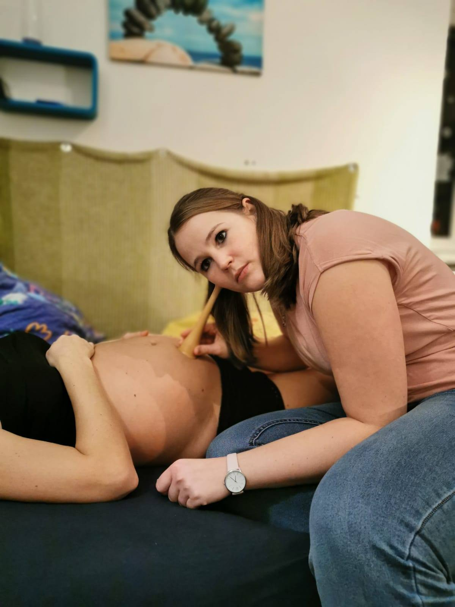
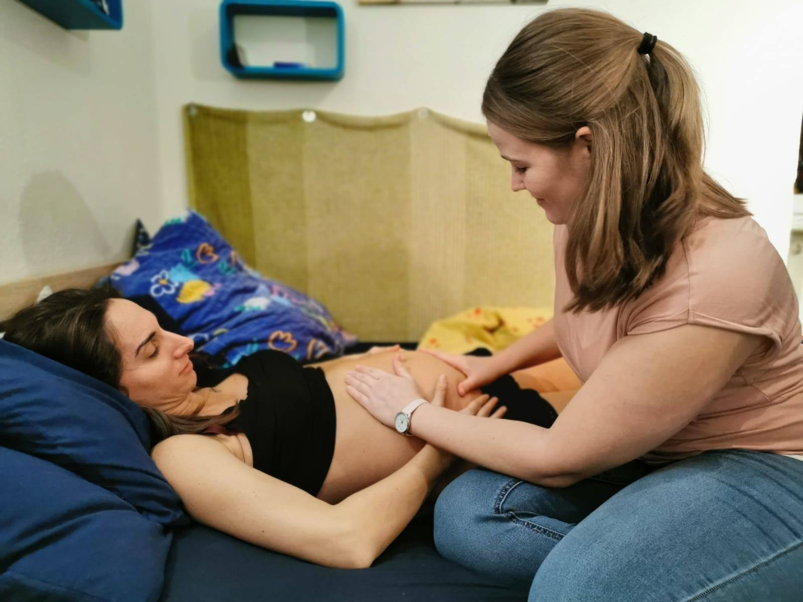
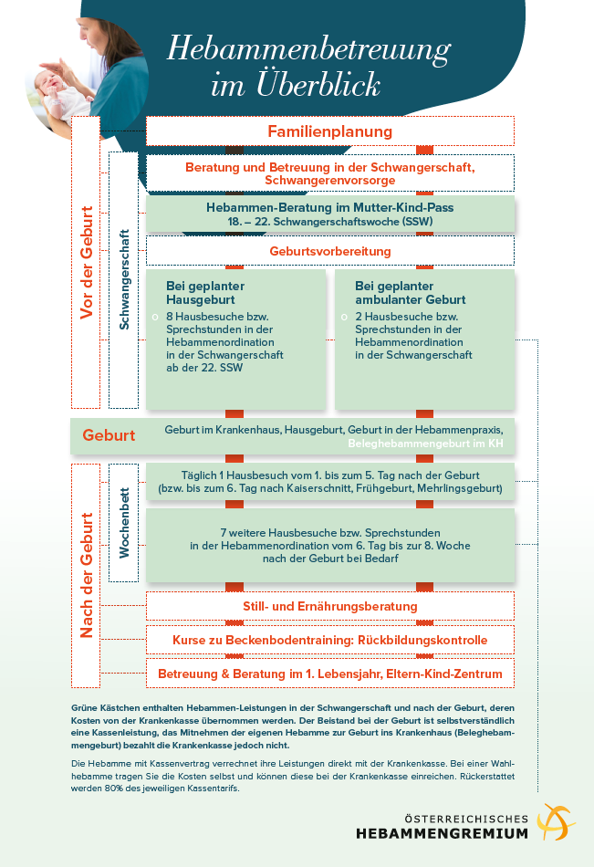

bitte schicken Sie mir ein Email
Homepage derzeit noch in Bearbeitung

geboren 1993 in Wien
AHS Matura, Abschluss 2011
Pflegehelfer Lehrgang, Abschluss 2012
Pflegehelferin im Krankenhaus Hietzing mit Neurologischem Zentrum Rosenhügel, 01/2013 bis 08/2016
Bachelorstudiengang Hebamme am FH Campus Wien, Abschluss 2019
Hebamme in der Privatklinik Rudolfinerhaus 09/2019 bis 04/2020
Hebamme im St. Josef Krankenhaus seit Mai 2020
50€ - kostenlos
Das Hebammengespräch im Mutter-Kind-Pass, zwischen der 18. und 22 Schwangerschaftswoche, wird in voller Höhe von der Krankenkasse zurückerstattet. Ideal für Fragen Rund um die Schwangerschaft, Geburt und das Wochenbett.
Dauer: 1 Stunde
80€
Die Schwangerschaft ist eine sehr aufregende und turbulente Zeit in der auch viele Fragen auftreten. Ich werde mir ausreichend Zeit für Sie nehmen um auf all Ihre Fragen einzugehen. Ebenfalls habe ich ein offenes Ohr für eventuelle Probleme, Ängste und Sorgen.
Dauer: 1 Stunde
80€
Natürlich bin ich auch gerne vor der Schwangerschaft für Sie da. So kann ich Sie gerne über Themen wie Verhütung und auch Kinderwunsch informieren.
Dauer: 1 Stunde
80€
Die erste Zeit nach der Geburt kann sehr herausfordernd sein, auch treten hier viele Fragen auf. In den ersten Wochen nach der Geburt kann ich zu Ihnen nach Hause kommen. Ich beobachte und unterstütze den physiologischen Prozess des Wochenbettes und die gesunde Entwicklung Ihres Kindes. Ebenfalls stehe ich Ihnen bei Fragen zum Stillen und in der Babypflege zur Verfügung und gebe praktische Tipps.
Dauer: 1 Stunde
80€
In den ersten Wochen nach der Geburt kann Stillen ganz oft recht schwierig und kompliziert werden. Ich berate Sie gerne jederzeit rund um das Stillen, vor allem dann wenn Stillschwierigkeiten auftreten.
Dauer: 1 Stunde
80€
Hebammen betreuen Familien bis zum 1. Geburtstag Ihres Kindes. Auch nach den ersten Wochen nach der Geburt verändert sich vieles und erneut tauchen Fragen über Fragen auf. Hierbei stehe ich Ihnen gerne zu Verfügung!
Dauer: 1 Stunde

Hier erhalten Sie einen Überblick zur Hebammenbetreuung. Da ich Wahlhebamme bin verrechne ich nicht direkt mit der Krankenkasse. Sie erhalten von mir eine Rechnung, die Sie bei der Krankenkasse einreichen können. Unter bestimmten Voraussetzungen werden 80% des Kassentarifes von der Krankenkasse refundiert. Diese Voraussetzungen sehen Sie in der Abbildung in den grün hinterlegten Kästchen. Die weißen Kästchen sind Leistungen, die nicht von der Krankenkasse bezahlt werden.

Quelle: www.hebammen.at/eltern/kostenWenn Sie Fragen zu meinen Angeboten haben oder eine Leistung in Anspruch nehmen wollen, würde ich mich sehr freuen, wenn Sie Kontakt zu mir aufnehmen würden:
Anja Schmid, BSc
Telefon: +43 699 1 957 35 38